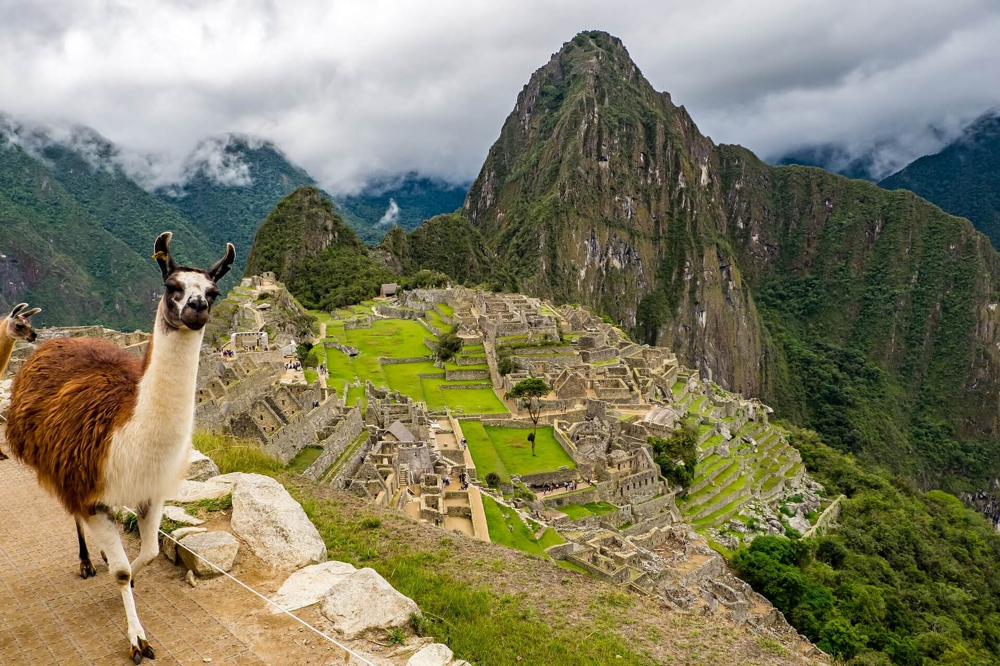

АКТУЕЛНА ПОНУДА

МАЧУ ПИКЧУ И АНДИТЕ
Куско, Перу
15.06 - 25.06
Откријте ја мистичната убавина на Перу и доживејте незаборавна авантура низ Андите. Посетете го светски познатиот Мачу Пикчу, истражете го историскиот Куско и уживајте во спектакуларните планински пејзажи. Ова патување е совршена комбинација од древна историја, култура, природа и авантура.
ЈУЖНОАМЕРИКАНСКА АВАНТУРА
Еден од најпознатите археолошки локалитети во светот и симбол на цивилизацијата на Инките. Древниот град е сместен високо во Андите и плени со камената архитектура, мистичната атмосфера и прекрасните панорамски погледи кон планините.
Историскиот центар на поранешната престолнина на Инките, познат по уникатниот спој на инканско и шпанско културно наследство. Градот нуди импресивни плоштади, храмови, камени улици и бројни историски знаменитости, меѓу кои и Кориканча и Саксахуаман.
Импресивна планинска област позната по своите древни инкански населби, археолошки локалитети и живописни андски пејзажи. Светата долина нуди можност за запознавање со традиционалната култура, локалните пазари и богатото наследство на Инките.
Еден од највпечатливите планински предели во Јужна Америка, препознатлив по високите врвови, длабоките долини и уникатните природни пејзажи. Областа околу Куско нуди незаборавни панорамски погледи и можност за пешачење и уживање во високопланинската природа.
Марас е познат по илјадниците солени базени распоредени по планинските падини, додека Морај плени со необичните кружни инкански тераси. Овие две атракции претставуваат уникатен спој на природа, историја и инженерско наследство на цивилизацијата на Инките.
Состанок со групата на аеродром во Скопје, 2 часа пред летот. Следува директен лет до Лима, па директен лет до Куско и пристигнување на аеродромот. По завршувањето на аеродромските процедури следува организиран трансфер до хотелот во близина на Куско и сместување. По сместувањето следува време за одмор и адаптација на надморската височина. Попладнето е предвидено за кратка прошетка низ околината и запознавање со градот. Вечерта е слободна за вечера и одмор. Ноќевање во хотел.
Појадок во хотелот и организирано разгледување на историскиот центар на Куско. Ќе се посетат Plaza de Armas, катедралата и храмот Кориканча. Потоа следува посета на археолошкиот комплекс Саксахуаман со неговите импресивни камени ѕидови. Разгледувањето продолжува со Кенко, Пука Пукара и Тамбомачај. Предвидено е слободно време за ручек, кафе, шопинг и фотографирање. Вечерта е слободна за индивидуални активности. Ноќевање во хотел.
Појадок и организирано тргнување кон Светата долина на Инките. Следува посета на Писац, познат по археолошкиот комплекс и традиционалниот пазар. Потоа продолжување кон Урубамба со можност за ручек и одмор. Во попладневните часови следува посета на тврдината и историското место Ољантајтамбо. Предвидено е време за прошетка низ старите улички и фотографирање. Потоа следува организирано враќање во Куско. Ноќевање во хотел.
Појадок и организирано тргнување кон друг дел од Светата долина. Следува посета на традиционално андско село и запознавање со локалната култура и начинот на живот. Патниците ќе имаат можност да видат традиционални ракотворби и текстил. Потоа следува време за ручек и уживање во планинската околина. Попладнето е предвидено за слободна прошетка и фотографирање. Во договореното време следува враќање во Куско. Вечерта е слободна за одмор. Ноќевање во хотел.
Рано наутро следува организирано тргнување од Куско кон железничката станица. Следува возење кон Агуас Калиентес низ прекрасните планински предели. По пристигнувањето продолжува организираниот трансфер до историското светилиште Мачу Пикчу. Следува разгледување на древниот инкански град и неговите најзначајни објекти. Предвидено е време за фотографирање и уживање во панорамските погледи кон Андите. По разгледувањето следува враќање со воз и организиран трансфер до Куско. Ноќевање во хотел.
Појадок во хотелот и организирано тргнување кон областа на Марас и Морај. Следува посета на познатите солени базени на Марас, распоредени по падините на планината. Потоа продолжува турата кон археолошкиот комплекс Морај со неговите необични кружни тераси. Патниците ќе имаат време за фотографирање и уживање во планинските пејзажи. Следува пауза за ручек и краток одмор. Во попладневните часови е предвидено враќање кон Куско. Вечерта е слободна за индивидуални активности. Ноќевање во хотел.
Рано наутро следува организирано тргнување кон Виникунка, позната како Планината на седумте бои. По пристигнувањето следува пешачење до гледната точка со панорамски поглед кон шарените планински предели. Патниците ќе имаат време за фотографирање и уживање во високопланинската природа. По завршувањето на прошетката следува пауза за одмор и ручек. Потоа следува организирано враќање кон Куско. Вечерта е слободна за одмор. Ноќевање во хотел.
Појадок во хотелот и организирано тргнување кон високопланинските предели околу Куско. Следува прошетка низ планинската природа и уживање во панорамските погледи кон Андите. Предвидено е време за фотографирање и кратки паузи за одмор. Потоа следува ручек и слободно време за уживање во околината. Во попладневните часови групата се враќа во Куско. Вечерта е слободна за последна прошетка, вечера и подготовка за заминување. Ноќевање во хотел.
Појадок во хотелот, по што следува слободен ден во Куско. Патниците ќе имаат можност индивидуално да го организираат денот според своите желби. Слободното време може да се искористи за прошетка низ историскиот центар, посета на локални продавници и пазари, кафе и шопинг. Предвидено е време за ручек и индивидуално разгледување. Попладнето продолжува со слободни активности и одмор. Вечерта е слободна за вечера и уживање во атмосферата на Куско. Ноќевање во хотел.
Појадок во хотелот и одјавување согласно предвиденото време. По собирањето на багажот следува организиран трансфер од хотелот до аеродромот. По пристигнувањето следува пријавување за летот и завршување на потребните аеродромски процедури. Следува директен лет назад кон Лима , па потоа директен лет кон Скопје. По пристигнувањето и преземањето на багажот завршува организираното патување.